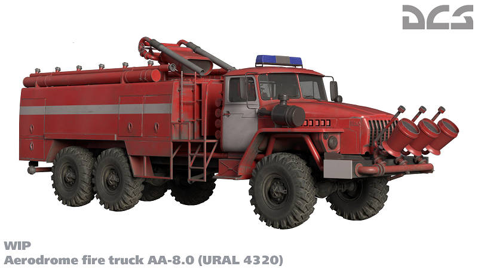
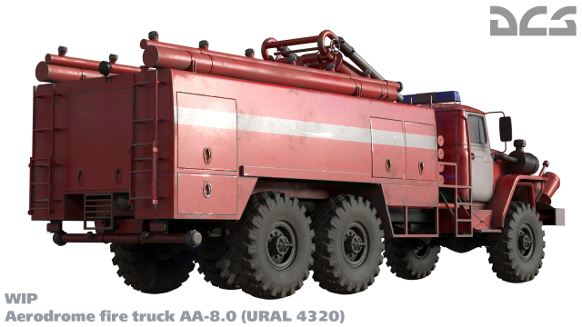

Media
The purpose of this page is soley for my personal learning exercises in using multmedia assests within html,
hence the shamless ripping, although resized and/or croped, images from the DCS webpages.
Hopfully ED will view this as free advertising and not get too bent up...
Responsive Media
(Resolution switching: Different sizes)


(Resolution switching: Same size, different resolutions)

(Art direction)
Favorite DCS Videos
Maps

Audio
Turn down the thunder if your frightened :-) .